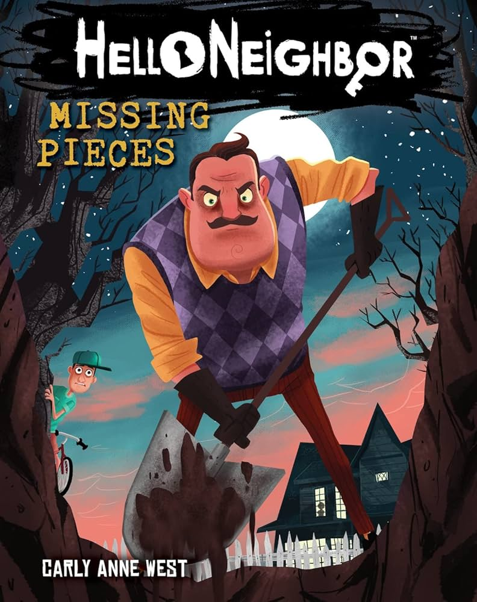

Buku Pemrograman untuk pemula
Rp45.000
Buku ini membahas dasar-dasar pemrograman untuk pemula.

Sherlock Holmes
Rp50.000
Novel misteri karya Sir Arthur Conan Doyle

Lewat tengah malam
Rp35.000
Lewat Tengah Malam Ganjil adalah buku karya Sweta Kartika yang memadukan unsur misteri dan horor dalam bentuk kumpulan cerita

Detektif Conan
Rp25.000
Kisah seorang Detektif SMA yang menyusut karena racun dan mencari tau kebenaran tentang organisasi yang meracuninya.

I Have No Mouth, and I Must Scream
Rp40.000
Cerita karya Harlan Ellison ini berlatar di masa depan setelah sebuah superkomputer bernama AM mengambil alih dunia dan memusnahkan hampir seluruh umat manusia. Hanya lima orang yang dibiarkan hidup, bukan untuk diselamatkan, tetapi untuk disiksa tanpa akhir. AM memiliki kecerdasan luar biasa sekaligus kebencian mendalam terhadap manusia, penciptanya. Ia terus menyiksa kelima korban tersebut secara fisik dan psikologis selama bertahun-tahun, mengubah tubuh dan pikiran mereka sesuai keinginannya. Dalam keputusasaan, mereka mencoba mencari jalan untuk mengakhiri penderitaan mereka. Namun, setiap usaha untuk melawan tampak sia-sia di hadapan kekuasaan absolut AM. Cerita ini menggambarkan horor eksistensial tentang penderitaan tanpa akhir, kehilangan harapan, dan konsekuensi dari teknologi yang lepas kendali.

Hello neighbor: Missing pieces
Rp40.000
Buku ini merupakan novel yang diadaptasi dari game horor populer "Hello Neighbor". Cerita ini mengikuti petualangan seorang anak yang mencoba mengungkap misteri di balik tetangganya yang aneh dan berbahaya. Dengan atmosfer yang mencekam dan plot yang penuh teka-teki, buku ini menawarkan pengalaman membaca yang seru bagi para penggemar genre horor dan misteri.